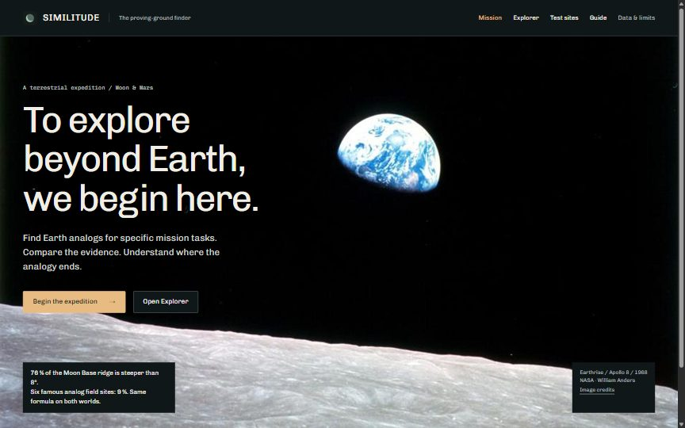
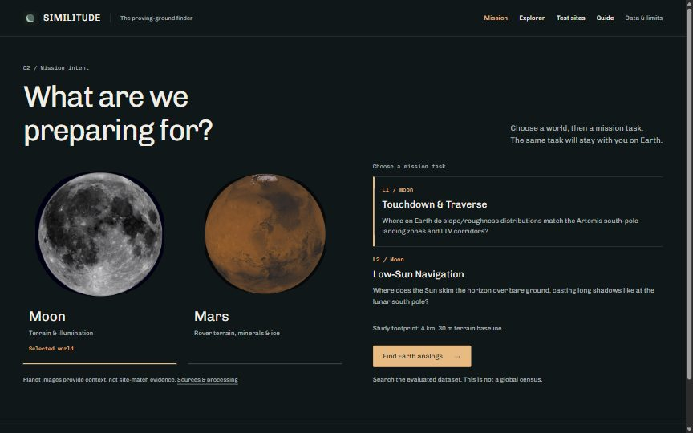
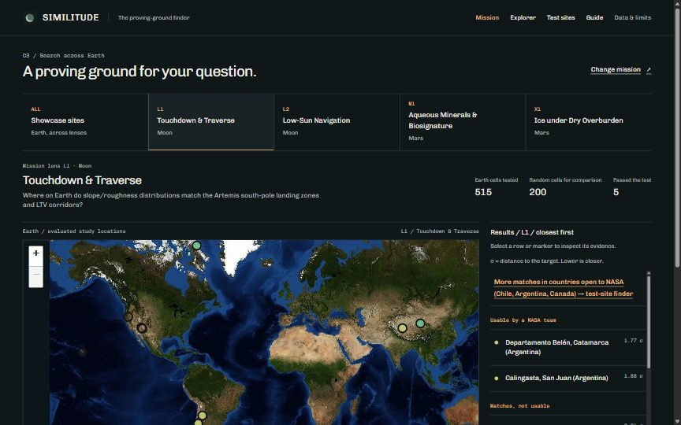
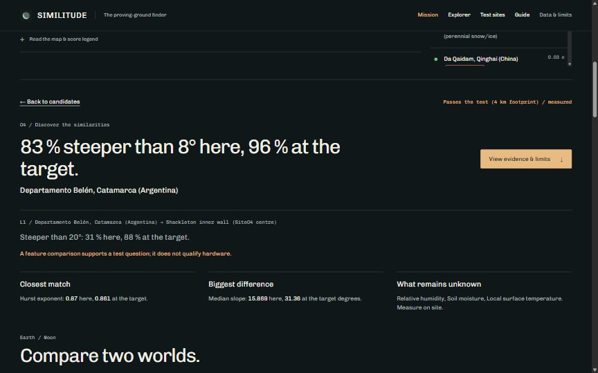
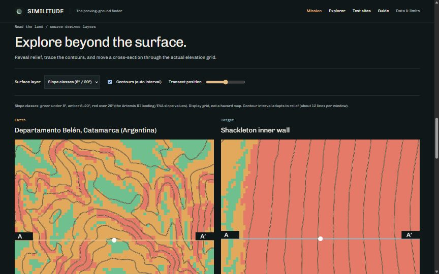
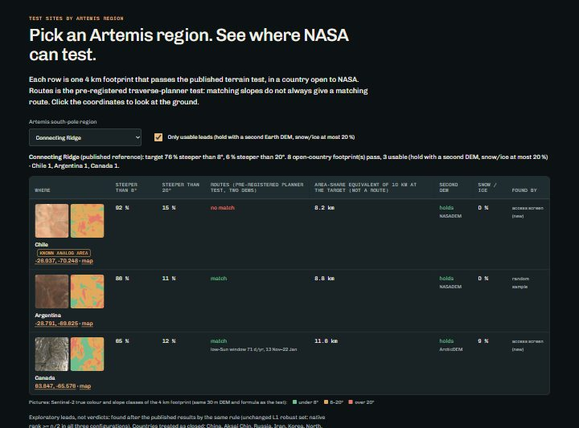
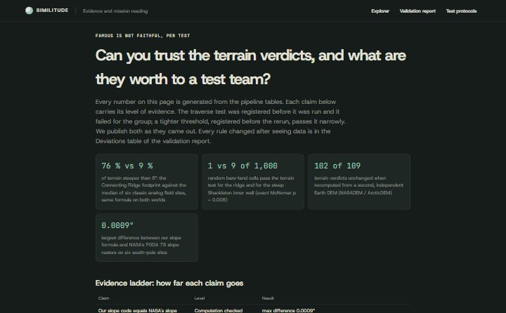

Guide
How to use SIMILITUDE
SIMILITUDE answers one question for a test engineer: where on Earth can I rehearse this Moon or Mars task, and which results will come home valid? Seven short steps. Every picture opens the real page.
- 1 Start
- 2 Pick a task
- 3 Read the results
- 4 Compare a site
- 5 Read the terrain
- 6 Test sites open to NASA
- 7 Check the evidence
- Terms
01
Start with the problem
The first screen states the gap. 76 % of the Moon Base ridge (Connecting Ridge) is steeper than 8°. The six famous analog field sites have a median of 9 %, measured with the same formula.
Press Begin the expedition to choose a task, or Open Explorer to go straight to the results.

Open the app02
Pick a world and a mission task
Each task is one test with its own target. The task stays with you on Earth.
- L1 Touchdown & Traverse (Moon): slopes and roughness.
- L2 Low-Sun Navigation (Moon): long terrain shadows.
- X1 Ice under Dry Overburden (Mars): ground ice under dry soil. Semi-quantitative.
- M1 Aqueous Minerals (Mars): failed its own pre-registered stop rule, so no site is offered.

Choose a task03
Read the results
The map and the list show the same 4 km Earth footprints. The list puts first what a NASA team can use.
- Usable by a NASA team: passes the test, little snow or ice, in a country open to NASA.
- Matches, not usable: passes the test, but fails the ice rule or lies in a closed country. The reason is shown.
- Controls and decoys: known sites that should pass or fail. They show the test works.
σ is the distance to the target. Lower is closer. It is not a confidence. Above the list, a link opens the test sites open to NASA.

Open the results04
Compare a site with its target
Select a row. The headline gives the numbers an engineer needs first: the share of terrain steeper than 8° and 20°, here and at the target. These are the Artemis III landing and EVA slope values.
Below: the closest match, the biggest difference and what is still unknown, then the two 4 km images side by side. The cards Full measurement table and What no Earth site reproduces open with one click.

Compare a site05
Read the terrain
Both windows use the same 4 km scale. Colours follow the mission slope classes: under 8°, 8–20°, over 20°.
Contours adapt to the relief, about twelve per window. Dense lines mean steep ground. Move the A–A′ section to see a height profile, the way a rover would cross it. This is a display grid, not a hazard map. Shown for the Moon terrain tasks (L1, L2).

Read the terrain06
Find test sites open to NASA
NASA cannot run a bilateral field campaign in China, so some matches cannot be used. This page re-ran the same terrain test in countries open to NASA.
Pick an Artemis south-pole region. Each row is a 4 km footprint with its satellite picture, slope classes, a second elevation-model check, snow and ice, and the pre-registered route test. Coordinates open the map. These are leads, not verdicts: nobody has visited them yet.

Open test sites07
Check the evidence
Every number on the site comes from the pipeline tables. The evidence page shows the checks against known answers.
- Our slope code matches NASA's own PGDA 78 slope maps to 0.0009°.
- 102 of 109 terrain verdicts hold with a second elevation model.
- 1 in 1,000 random cells passes for the ridge: a match is rare.
- The mineral test failed, and we say so.

Open the evidenceTerms in one line
- Footprint
- A 4 km square on Earth, scored as one unit. Not a whole region.
- σ (sigma)
- Distance to the target in the task's descriptors. Lower is closer. Not a confidence.
- Null sample
- Random bare-land cells. A match must beat 90 % of them.
- TRANSFERS
- Test it in the field. The site reproduces this variable.
- NO-ANALOG
- No Earth site reproduces it. The card names the facility to use, such as an offload rig or a vacuum chamber.
- UNOBSERVED
- Our data cannot say, for example boulders under 60 m. Measure it on site.
- Second DEM
- The same test recomputed from an independent elevation model (NASADEM or ArcticDEM).
- Usable
- Holds with the second DEM, snow and ice at most 20 %, and in a country open to NASA.